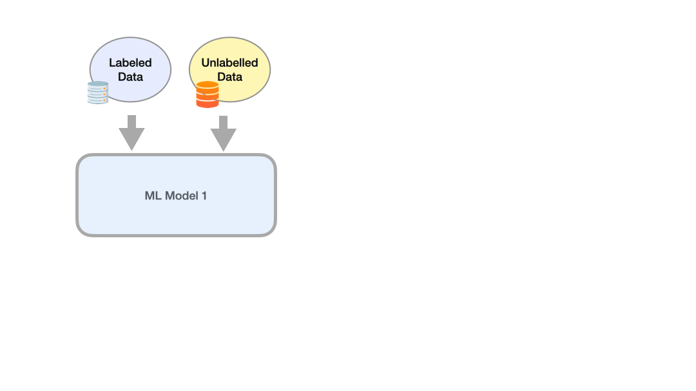
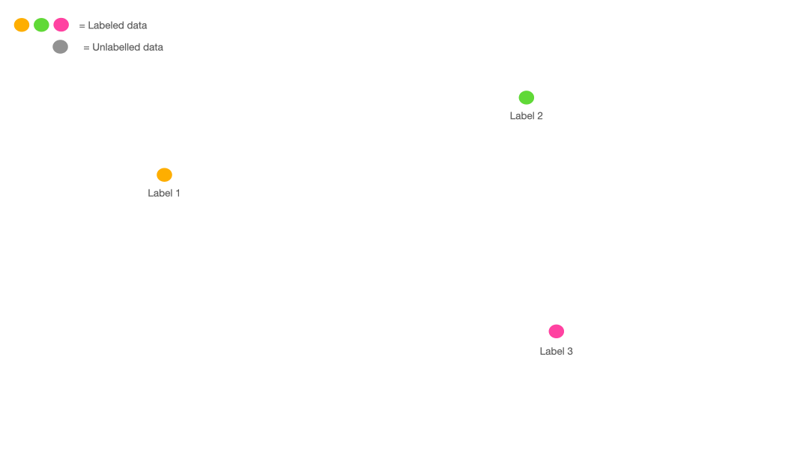
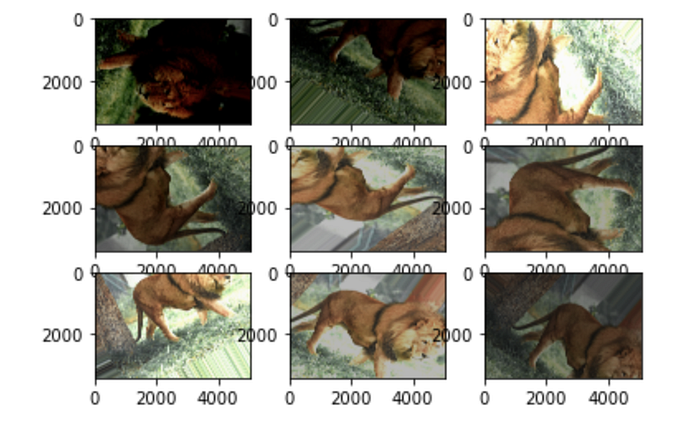

How to Handle Label Scarcity: A Visual Explanation
Learn about Weak and Semi supervision techniques with animated explanations.
July 8, 2024 · Data, Visual Explanation, Label Scarcity
Weak Supervision
There is no doubt that human annotations (labels) are the most accurate, but it is often not possible to have them since they are very expensive and also time-consuming. Weak supervision is a methodology for programmatically annotating data without the supervision of a human annotator, and generating labels in this way. Various tools and libraries already exist to do this such as Snorkel.
These weak supervision methods use heuristics to annotate the data. The heuristics are usually created by domain experts who have the domain knowledge to make assumptions.
A trivial example might be the following heuristic: whenever an email contains the words “free money” I mark it as spam. Obviously, this is a very simple heuristic based on textual data, but in reality, it can be much more complicated.
Libraries such as Snorkel are based on definitions of these heuristics called Labeling Functions (LF). For example, let’s see how to implement an LF using Snorkel. Let’s install the library.
# For pip users
pip install snorkel
# For conda users
conda install snorkel -c conda-forgeLet’s now load an unlabeled dataset.
from utils import load_unlabeled_spam_dataset
df_train = load_unlabeled_spam_dataset()We define a map of variables to make the code easier to read.
# Define the label mappings for convenience
ABSTAIN = -1
NOT_SPAM = 0
SPAM = 1Now we can define our labelling function as I described earlier.
from snorkel.labeling import labeling_function
@labeling_function()
def lf_keyword_my(x):
"""Many spam comments talk about 'my channel', 'my video', etc."""
return SPAM if "free money" in x.text.lower() else ABSTAINA labelling function can also be based on other conditions, such as using a regex. Let’s look at an example.
import re
@labeling_function()
def lf_regex_check_out(x):
"""Spam comments say 'check out my video', 'check it out', etc."""
return SPAM if re.search(r"check.*out", x.text, flags=re.I) else ABSTAINIf you are curious to see a full implementation of the code I recommend reading the library’s documentation.
One important thing is that heuristics can also be based, for instance, on the output of other Machine Learning algorithms. For example, an algorithm may define an email as one that contains a sale of some beauty products, and our heuristics in turn declare it as spam.
Of course, knowing how to create automatically labelled datasets does not solve the problems of Machine Learning, because you have to take into account the noise that is introduced. For example, different experts may choose different heuristics, or disagree about a particular heuristic. In that case, you have to take the output that comes from each heuristic and make an evaluation. You may choose to take the majority output or give different weights to each heuristic based on your confidence in it.
The following animation shows the case of three heuristics defined by three different experts in the field. Each expert chose a different heuristic based on the content of the email to label it as SPAM or NOT SPAM.
Although you can label an entire dataset without having any labels, being able to have at least a few could help experts recognize patterns within the data. Moreover, even if the heuristics you create are correct, they may not cover all possible cases; you may still be missing something that has been overlooked.
Semi Supervision
Methods to mitigate the lack of labels fall into the category of semi-supervision if they require a minimal amount of annotated data (which in weak supervision was not essential).
There are two methods that fall under semi-supervision that have high popularity:
- Self Training
- Perturbation Based methods
Self Training
In this first method, what you do is train a model on the annotated data that you have. The trained model is used to predict the labels of the additional data without annotation. Predictions that have high confidence (e.g., above 80 percent) are taken as true and will now be part of the training set.
Now we can train a second model with much more data, those that have an original label and those that have a label produced by the first model. Of course, you can iterate this process several times.

Of course, one must consider that the ML Model 1 predictions are not perfect, and therefore noise will be introduced within the new data created in this way.
Another way to generate labels using Machine Learning algorithms is to generate clusters. The assumption we make is that similar data that therefore belong to the same cluster will have the same label. And because in semi-supervisory we have a starting labelled database, we can generalize the labels for all data within the cluster. The following animation shows an example.

Perturbation Based
Another method that falls into the semi-supervised class is Perturbation Based. With this method, the input data are slightly modified and the assumption is made that this slight modification does not affect the label. In this way, we could create much more data. For example, the image of a panda will have “panda” as its label. By going to add noise to some pixels of this image we expect the label to always remain “panda.” Another example would be to slightly change the value of text embeddings if we are working on an NLP project.
Surely you have already used this method if you have developed a computer vision algorithm (such as a CNN) at least once. When you do data augmentation, you go and modify the original image, rotate it magnified, increase the brightness and much more. What you do is make perturbations assuming that the label remains unchanged.

If you have never done something like this I recommend you follow these tutorials from the official Tensorflow and PyTorch pages.
- https://www.tensorflow.org/tutorials/images/data_augmentation
- https://pytorch.org/tutorials/beginner/data_loading_tutorial.html
Final Thoughts
One of the most common problems when dealing with a real Machine Learning problem is the lack of data or rather the lack of annotated data. In this article, we have addressed some mechanisms to deal with this problem. This is not to say that as of today you can develop algorithms without labelled data, but that you have methods to best deal with this problem should you find yourself in this situation.
If you are interested in more articles like this follow me! 😉
The End
Marcello Politi
This article was published on Towards Data Science